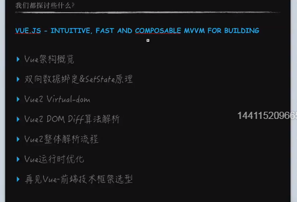 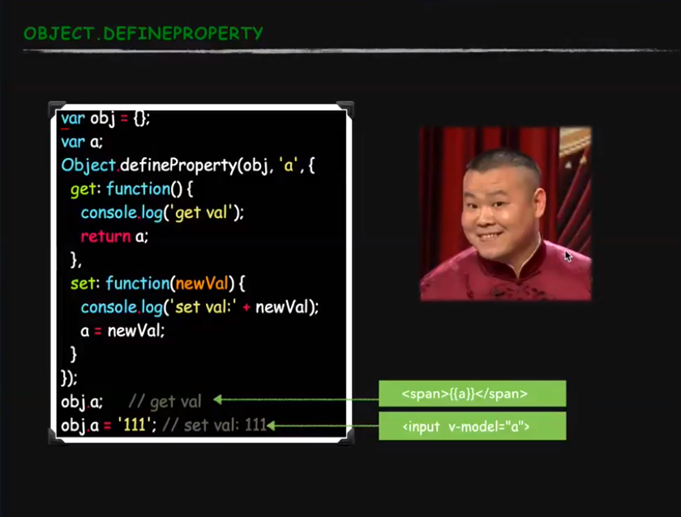
<!DOCTYPE html>
<html lang="en">
<head>
<meta charset="UTF-8">
<meta name="viewport" content="width=device-width, initial-scale=1.0">
<meta http-equiv="X-UA-Compatible" content="ie=edge">
<title>Document</title>
</head>
<body>
手写一个简单双向绑定<br/>
<input type="text" id="model" onchange="handleChange(this.value)"><br/>
<div id="modelText"></div>
<script>
var user = {};
var defaultName = "狂奔的蜗牛";
document.querySelector("#model").value = defaultName;
document.querySelector("#modelText").textContent = defaultName;
//定义属性 监控改变
Object.defineProperty(user,"name",{
get:function(){
console.log("你是不是来获取值啦");
return defaultName;
},
set:function(newValue){
console.log("设置新值");
defaultName = newValue;
console.log("实现 模型 => 视图");
document.querySelector("#model").value = newValue;
document.querySelector("#modelText").textContent = newValue;
}
})
function handleChange(val){ //鼠标移除input框之后才执行
console.log(val);
user.name = val;
}
</script>
</body>
</html>
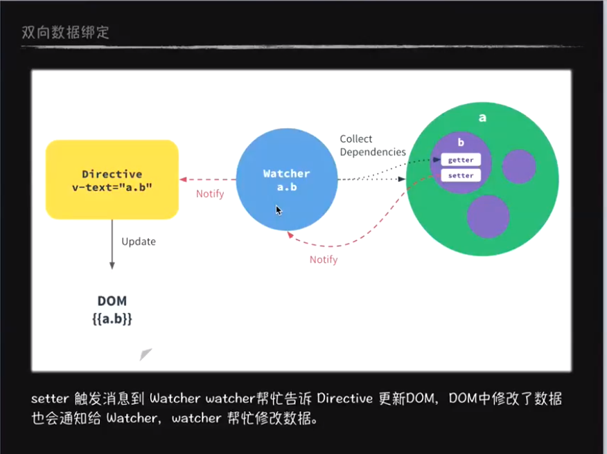
setter触发消息到Watcher，watcher告诉Directive更新DOM，DOM中修改了数据也会通知给Watcher，watcher帮忙修改数据
每当你去写一个v-text="a.b"这样的vue的语法的时候，他会创建一个watcher，watcher把这个值写给对象A。一单a.b被修改了watcher会监听到通知Directive更新DOM
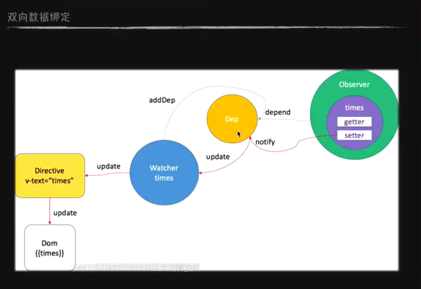
Watcher不直接连接数据中心了，而是在中间加了一个观察者模式也叫发布订阅模式。 如果没有观察者模式，那么所有的Watcher的值都写给大爷，大爷脑袋不好使。 弄一个电话本 Dep去记录，由大爷和Watcher共同管理，由大爷写入电话本，报纸来了群发
那么看一下大爷怎么实现观察者模式
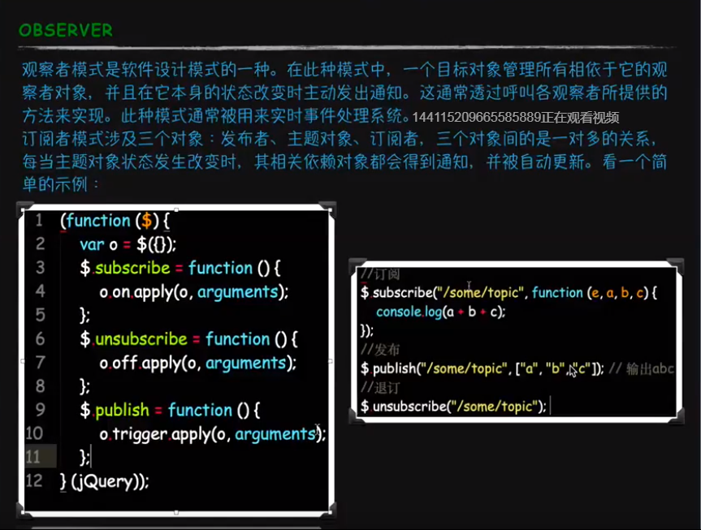
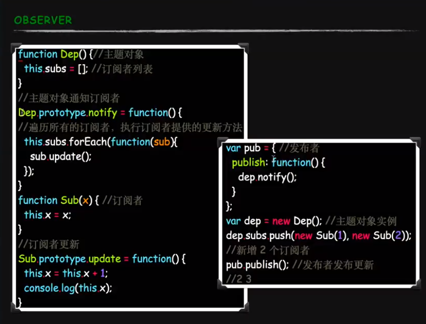
function Dep(){
this.subs=[];
}
Dep.prototype.notify= function(){
this.subs.forEach(function(sub){
sub.update();
})
}
function Sub(x){
this.x= x;
}
Sub.prototype.update= function(){
this.x=this.x+1;
console.log(this.x);
}
var pub = {
publish:function(){
dep.notify();
}
}
var dep= new Dep();
dep.subs.push(new Sub(1),new Sub(2));
pub.publish();
VM251:17 2
VM251:17 3
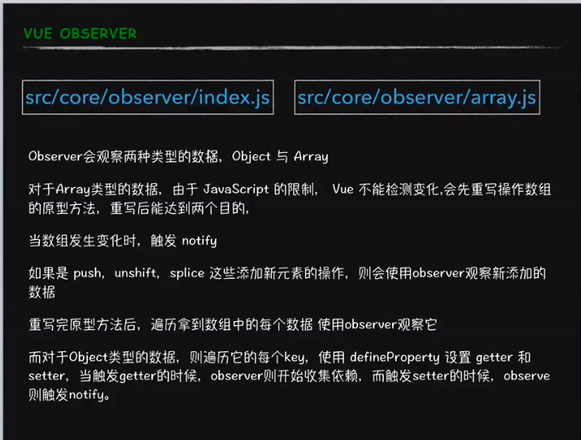
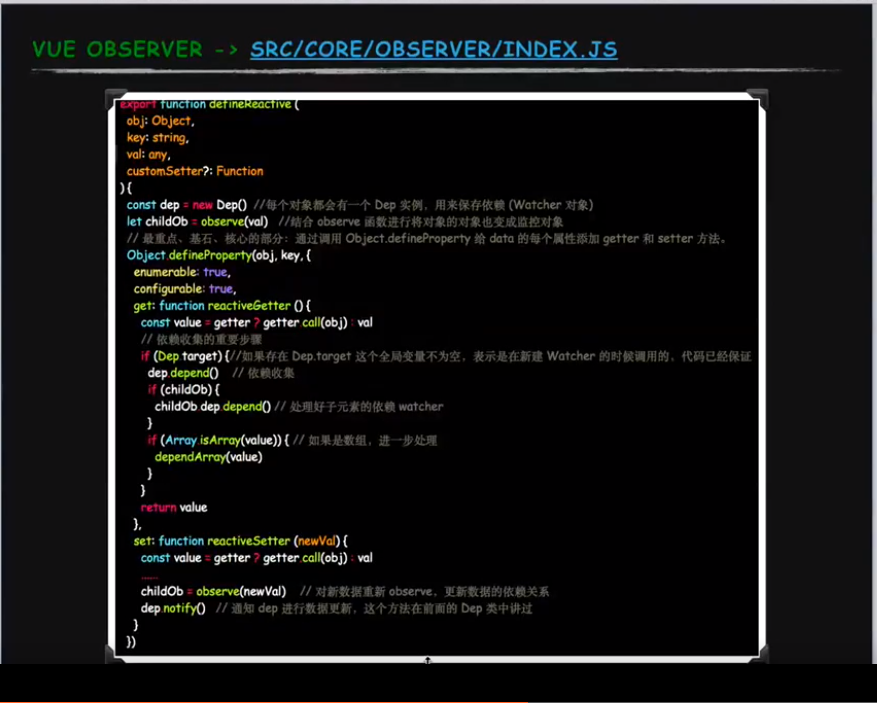
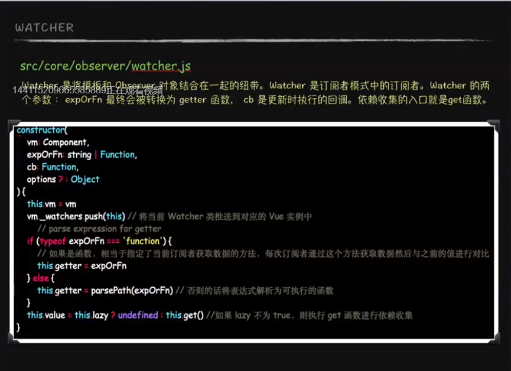
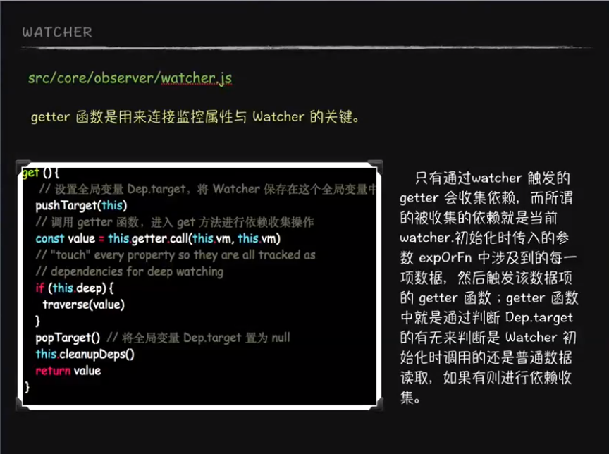
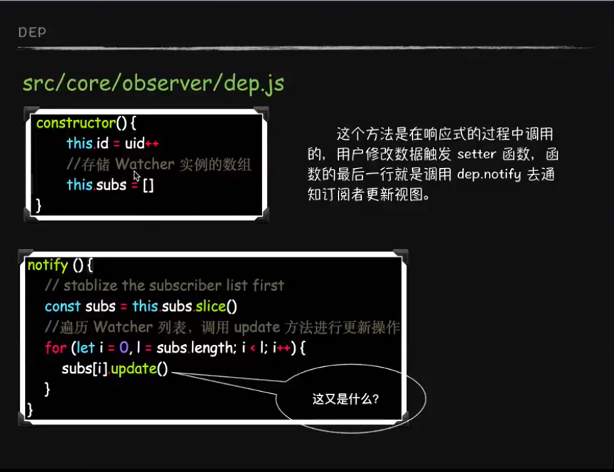
vue实现了双向数据绑定，react是单向流，是state数据驱动的状态机。 virtualDom 是在内存操作Dom。
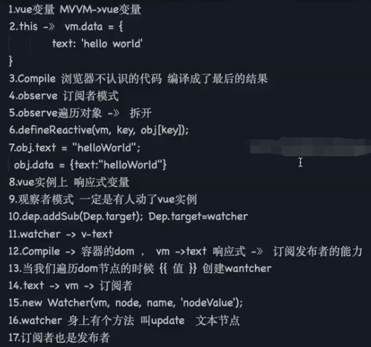
setTimeout(function(){
console.log(1);
})
new Promise(function(resolve,reject){
console.log(2);
resolve();
console.log(3);
}).then(function(){
console.log(4);
})
console.log(5)
//结果 2 3 5 4 1
js有同步的执行栈和异步的执行队列，同步的先执行，异步的再执行（ajax、setTimeout、 Promise的then）。 异步的里面分宏队列和微队列，微队列的优先级高于宏队列。 当同步队列的执行栈执行完毕之后，把异步队列的代码拉回到同步队列去执行。
Event Loop 执行顺序如下所示：
首先执行同步代码，这属于宏任务
当执行完所有同步代码后，执行栈为空，查询是否有异步代码需要执行
执行所有微任务
当执行完所有微任务后，如有必要会渲染页面
然后开始下一轮 Event Loop，执行宏任务中的异步代码，也就是 setTimeout 中的回调函数
所以以上代码虽然 setTimeout 写在 Promise 之前，但是因为 Promise 属于微任务而 setTimeout 属于宏任务，所以会有以上的打印。
微任务包括 process.nextTick ，promise ，MutationObserver，其中 process.nextTick 为 Node 独有。
宏任务包括 script ， setTimeout ，setInterval ，setImmediate ，I/O ，UI rendering。
例子
console.log('script start')
async function async1() {
await async2()
console.log('async1 end')
}
async function async2() {
console.log('async2 end')
}
async1()
setTimeout(function() {
console.log('setTimeout')
}, 0)
new Promise(resolve => {
console.log('Promise')
resolve()
})
.then(function() {
console.log('promise1')
})
.then(function() {
console.log('promise2')
})
console.log('script end')
// script start => async2 end => Promise => script end => promise1 => promise2 => async1 end => setTimeout
把async 的这两个函数改造成你一定能理解的代码
new Promise((resolve, reject) => {
console.log('async2 end')
// Promise.resolve() 将代码插入微任务队列尾部
// resolve 再次插入微任务队列尾部
resolve(Promise.resolve())
}).then(() => {
console.log('async1 end')
})